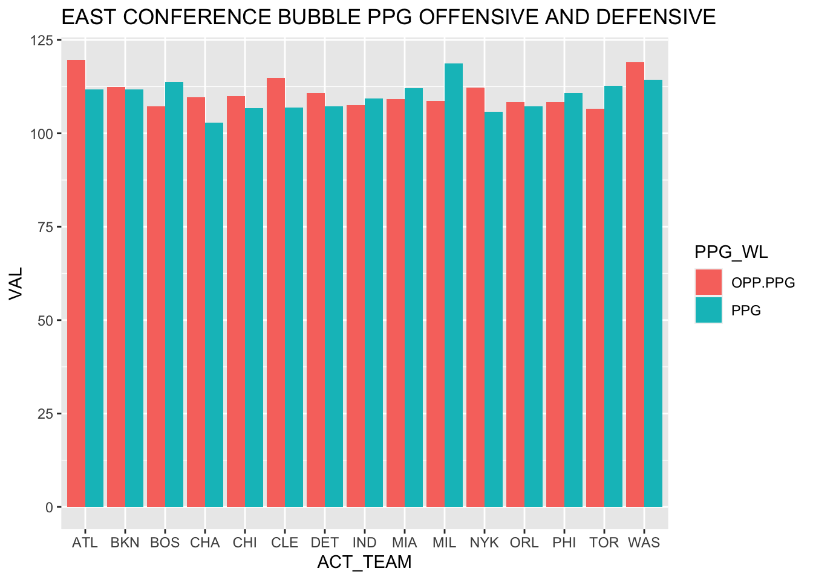
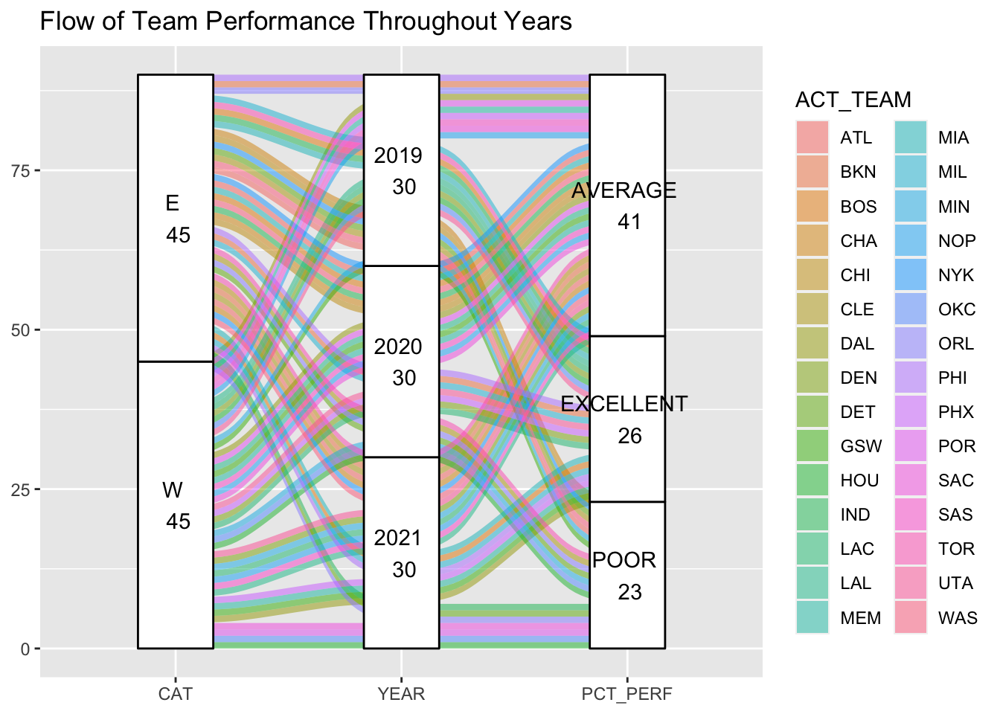
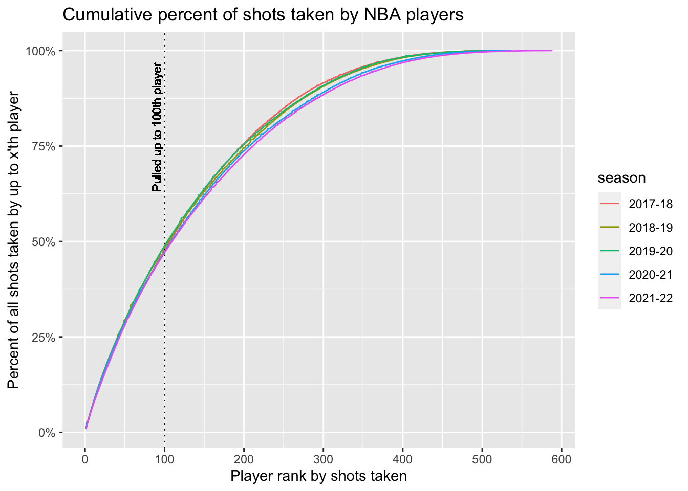
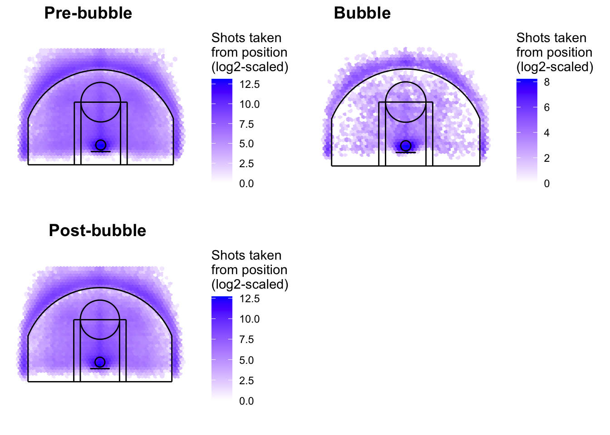
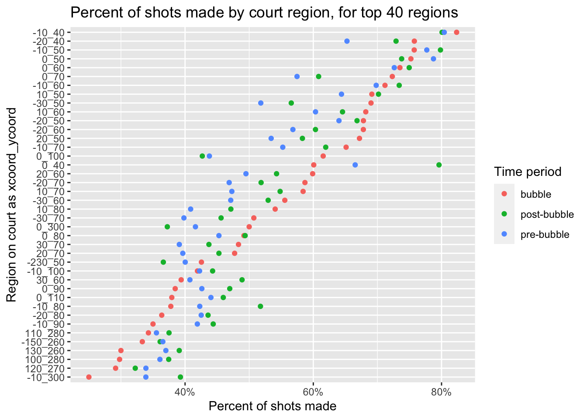

Chapter 4 Results
4.1 Seasonal Data Bubble Year and Beyond
Here we grab the data, which is referred to in the data section. We end up grabbing from espn and merging the tables together based on the teams, conferences, and years. This is talked about more in the data section.
We start with the first graph below based on the NBA data, where we see the fluctuations in points in a Cleveland dot chart where we see by year if the dots change per team per year. We did this where we organized from top down by year 2019 PPG descending order. Here we can see diverging points where some of the teams have less PPG than years before. For example, Milwaukee increased from the bubble year which is 2019 whereas Denver decreased in PPG. Charlotte increases steadily each year in offensive points per game. Also, other patterns explored can show how PPG in 2019 related to playoff runs or playoff positions.This chart will help determine if offensive identity was different from the bubble than years past.
In the next graph, we want to plot opponents points per game versus points per game scored. We are going to take a specific look at 2019 so we can plot offensive and defensive prowess and see what teams in which conferences benefited that year. Specifically, we separate by conference and see in-depth analysis with teams. During the bubble, we can see from the graph that some teams like Milwaukee and Boston had both offensive and defensive prowess from the gap in the bars of opponent ppg and ppg. Some teams like Phoenix had both offesnive and defensive ability almost equal.

For the next graph, we can see that there are three teams that performed well from each conference in 2019. We get to take a deeper look at it and see if their position changed over the years. This can help show the audience that position of teams change over the years. From this graph, we can see LAL somehow continuously goes down considering they are the number one team from the bubble. Toronto especially takes a massive plummet in its ranking over the next year. Boston overall goes up in its ranking and we see that today especially how it performs in the NBA.
We get to see some the trending three teams from the bubble again from each conference. The number of wins is shown for those same teams. We can now see another statistic from them over the years. A cool feature is that you can label them with numbers which is what we precisely do with the lines to see the patterns. We can see the graph from below matches some of the position pattern from above. This makes sense because position and record wins/losses are related to each other. We can see that Toronto might have just had an outlier year based on the number of losses. We could potentially attribute the year before to luck or this one to an injuries.
We take in a couple of columns of the data and use year, team, category: west or east, and pct(winning/total games). Once we do that, we create a new column that factors in poor, average, and excellent performance based on less than .4, greater than or equal .4 but less than .6 and greater than or equal to .6 respectively as indicator measures. We create a alluvial plot to show a flow of change of teams from each respective category from each year to see difference in performances and fill based on team. This graph just adds a different perspective with regards to the east versus west difficulty during these years. We can see that there are overall some more poor west performers. We can also note the specific flow of each team like Atlanta going from poor to average performance flow based on the years. This can be used in further exploration to explore team performance in spite of scoring statistics and see if there are unique phenomena.
## YEAR ACT_TEAM CAT PCT PCT_PERF
## 1 2019 MIL E 0.767 EXCELLENT
## 2 2019 TOR E 0.736 EXCELLENT
## 3 2019 LAL W 0.732 EXCELLENT
## 4 2019 LAC W 0.681 EXCELLENT
## 5 2019 BOS E 0.667 EXCELLENT
## 6 2019 DEN W 0.630 EXCELLENT
## 7 2019 IND E 0.616 EXCELLENT
## 8 2019 HOU W 0.611 EXCELLENT
## 9 2019 OKC W 0.611 EXCELLENT
## 10 2019 UTA W 0.611 EXCELLENT
## 11 2019 MIA E 0.603 EXCELLENT
## 12 2019 PHI E 0.589 AVERAGE
## 13 2019 DAL W 0.573 AVERAGE
## 14 2019 BKN E 0.486 AVERAGE
## 15 2019 POR W 0.473 AVERAGE
## 16 2019 MEM W 0.466 AVERAGE
## 17 2019 PHX W 0.466 AVERAGE
## 18 2019 SAS W 0.451 AVERAGE
## 19 2019 ORL E 0.452 AVERAGE
## 20 2019 SAC W 0.431 AVERAGE
## 21 2019 CHA E 0.354 POOR
## 22 2019 NOP W 0.417 AVERAGE
## 23 2019 CHI E 0.338 POOR
## 24 2019 NYK E 0.318 POOR
## 25 2019 MIN W 0.297 POOR
## 26 2019 DET E 0.303 POOR
## 27 2019 CLE E 0.292 POOR
## 28 2019 WAS E 0.347 POOR
## 29 2019 ATL E 0.299 POOR
## 30 2019 GSW W 0.231 POOR
## 31 2020 UTA W 0.722 EXCELLENT
## 32 2020 PHX W 0.708 EXCELLENT
## 33 2020 PHI E 0.681 EXCELLENT
## 34 2020 BKN E 0.667 EXCELLENT
## 35 2020 DEN W 0.653 EXCELLENT
## 36 2020 LAC W 0.653 EXCELLENT
## 37 2020 MIL E 0.639 EXCELLENT
## 38 2020 DAL W 0.583 AVERAGE
## 39 2020 POR W 0.583 AVERAGE
## 40 2020 LAL W 0.583 AVERAGE
## 41 2020 NYK E 0.569 AVERAGE
## 42 2020 ATL E 0.569 AVERAGE
## 43 2020 MIA E 0.556 AVERAGE
## 44 2020 GSW W 0.542 AVERAGE
## 45 2020 MEM W 0.528 AVERAGE
## 46 2020 BOS E 0.500 AVERAGE
## 47 2020 WAS E 0.472 AVERAGE
## 48 2020 IND E 0.472 AVERAGE
## 49 2020 CHA E 0.458 AVERAGE
## 50 2020 SAS W 0.458 AVERAGE
## 51 2020 CHI E 0.431 AVERAGE
## 52 2020 NOP W 0.431 AVERAGE
## 53 2020 SAC W 0.431 AVERAGE
## 54 2020 TOR E 0.375 POOR
## 55 2020 MIN W 0.319 POOR
## 56 2020 CLE E 0.306 POOR
## 57 2020 OKC W 0.306 POOR
## 58 2020 ORL E 0.292 POOR
## 59 2020 DET E 0.278 POOR
## 60 2020 HOU W 0.236 POOR
## 61 2021 PHX W 0.780 EXCELLENT
## 62 2021 MEM W 0.683 EXCELLENT
## 63 2021 MIA E 0.646 EXCELLENT
## 64 2021 GSW W 0.646 EXCELLENT
## 65 2021 DAL W 0.634 EXCELLENT
## 66 2021 BOS E 0.622 EXCELLENT
## 67 2021 MIL E 0.622 EXCELLENT
## 68 2021 PHI E 0.622 EXCELLENT
## 69 2021 UTA W 0.598 AVERAGE
## 70 2021 TOR E 0.585 AVERAGE
## 71 2021 DEN W 0.585 AVERAGE
## 72 2021 CHI E 0.561 AVERAGE
## 73 2021 MIN W 0.561 AVERAGE
## 74 2021 BKN E 0.537 AVERAGE
## 75 2021 CLE E 0.537 AVERAGE
## 76 2021 ATL E 0.524 AVERAGE
## 77 2021 CHA E 0.524 AVERAGE
## 78 2021 LAC W 0.512 AVERAGE
## 79 2021 NYK E 0.451 AVERAGE
## 80 2021 NOP W 0.439 AVERAGE
## 81 2021 WAS E 0.427 AVERAGE
## 82 2021 SAS W 0.415 AVERAGE
## 83 2021 LAL W 0.402 AVERAGE
## 84 2021 SAC W 0.366 POOR
## 85 2021 POR W 0.329 POOR
## 86 2021 IND E 0.305 POOR
## 87 2021 OKC W 0.293 POOR
## 88 2021 DET E 0.280 POOR
## 89 2021 ORL E 0.268 POOR
## 90 2021 HOU W 0.244 POOR
4.2 Shot data
As noted in the data sources section, for this data, we only pulled shot data for the top 100 players each season. The graph below shows that doing so, regardless of season, generally accounts for about 50% of the season’s shots.
First, this justifies our decision to only pull the first 100 players’ shots. This gave us a substantial amount of data without needing to spend time retrieving the long tail of players. Of course, this means the following analysis and plots all come with the caveat that they’re really only applicable for the 50% of shots from the “shootingest” players.
Second, the plot below indicates that by season, the distribution of shots taken by player rank has been roughly consistent. Even during the 2019-20 season (which included the bubble), this remained the case. In this regard, it seems as though the bubble had no impact. Note that we cannot break this data into only the bubble period, because this data is not available broken down by date (unless we downloaded every player’s shot data – which we wanted to avoid as discussed earlier). 
The graphs below show heatmaps of the count of shots taken from each position on the court, broken down by pre/during/post-bubble periods. There are a few things worth noting here:
- Figuring out how to properly draw the courts was tedious and took a lot of time. This was achieved with the assistance of this article, which showed how to do something similar in Python.
- Our initial attempt at plotting these heatmaps wasn’t particularly useful because the number of shots taken near the hoop far exceeds any other court region, which meant the only area that had any color was under the hoop. So, we rescaled by taking the log of shot count, in order to get a better visual color gradation. Keep in mind that the colors here are therefore not proportional to true shot count.
In terms of analysis on these graphs, it’s hard to conclude anything strongly. The reality of shots during the bubble period is that there were far fewer, to the point where some places on the court had no shots at all. This makes the heatmaps look quite different and so they are difficult to compare. Perhaps the only thing we might conclude is in regards to shots taken on the three point line. In the non-bubble periods, there are three darker “clusters” in the middle, on the top left, and on the top right of the three point line. However, for the bubble plot, it seems as though there’s no obvious clustering of shots such that they’re evenly distributed along the three point line.

The graphs below help dig further into the clustering noted above. They plot each shot taken as a point, along with countour curves that surround the most prominent clusterings of points. This approach helps us see shot locations more granularly. The countours here are more or less the same across plots, except for in the regions above the three point line as described above. These contours validate our earlier conclusion: in the bubble, shots were taken relatively evenly along the three point line, while in the other periods there was some sort of triad of clustering.
The graph below investigates shot accuracy instead of total shots taken. Here, the rows reflect a 10-unit square of the court; for example, -10_300 is the region on the court spanning -20 to -10 on the x-axis and 300 to 310 on the y-axis. For reference, the bottom left corner of each court as drawn above is at (-220, 0) and the top right corner is at (220, 350). This matches the convention of the location data exactly as given by the NBA. We only show the 40 regions that had the highest number of total shots taken.
Although not universally true, this plot shows that accuracy in the bubble, by court region, generally was higher than in the other periods. Accuracy in the bubble was highest for a disproportionate number of regions (nearly half), and was lowest for roughly 1/3 of regions (which is expected). This outpaces both other periods. As such, we can conclude from this graph that accuracy in the top court regions was higher in the bubble.
